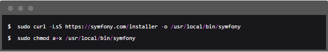
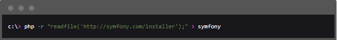
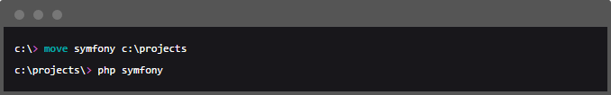
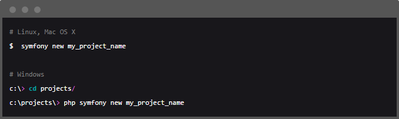
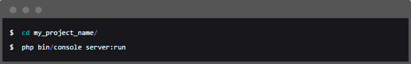
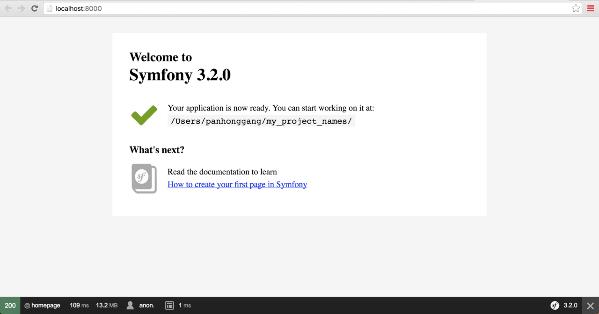
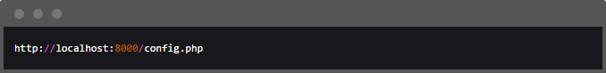
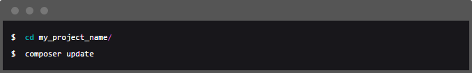
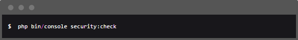

安装Symfony Installer
☆安装器需要php5.4或更高。如果你仍然在使用遗产级的php5.3，你不能使用Symfony安装器。
如果你使用的是安装环境的打包解决方案，比如WAMP，XAMP或MAMP，请检查它们是否采用了PHP近期版本。你可以在命令行中使用下述命令来查看PHP版本：根据操作系统的不同，Symfony安装器的安装方式也有所不同。
Linux和MAC OS X系统
打开命令行工具执行下述命令：
这将创建一个全局的Symfony命令到你的系统上。
Windows系统
在Windows上，执行下述命令：
它会下载一个symfony文件，然后把这文件移动到你想创建Symfony项目的文件夹里，通过下述命令可引导各种安装：
创建Symfony程序
当Symfony安装器被设置好之后，使用全新命令new来创建Symfony项目：
这命令创建了一个新的my_project_name目录，里面是一个基于最新稳定版Symfony程序的新项目。除此之外，安装器还会检查你的系统是否具备了执行Symfony程序的技术需求。若不满足，你会看到一个“哪些地方还需改变”的需求列表。
如果安装器不工作或是不输出任何内容，确保你的系统已经安装并开启了phar扩展。
运行Symfony
在开发时，Symfony利用了PHP内置的web服务器。因此，运行Symfony程序关乎项目所在目录并执行如下命令：
然后，打开浏览器访问http://localhost:8000/链接，即可看到Symfony欢迎页：
除了欢迎页，你还可能看到空白页和错误页面，这通常是由于目录权限的错误配置造成的。根据你的操作系统，有若干解决方案。
PHP内置服务器仅在php5.4和以上版本中存在。如果是老版PHP，你应该在操作系统的web server上针对Symfony项目配置虚拟主机（Virtual Host）。 server:run命令只适合于开发阶段。检查Symfony运行环境的配置
Symfony程序内置了一个服务器环境检查器，用来显示有关设置是否适合于Symfony。访问下面链接即可检查：
如果显示有问题，在继续使用Symfony之前修复它们。
更新Symfony程序
至此，你已创建了可以立即投入开发的全功能Symfony项目。Symfony程序依赖的是大量外部类库，它们可以下载到vendor/目录下，并且被Composer进行排他管理。
频繁更新这些三方类库是最佳实践，可以防止bug和漏洞。执行Composer的update命令来一次性全部更新它们：
根据项目复杂程度，这种更新方式需要耗费若干分钟才能完成。
Symfony还提供了一个用于检查项目依赖是否包含了已知的重大安全漏洞的命令： 定期执行此命令是一个好习惯，因为可以尽可能快地更新或替换掉那些免疫低下的依赖。
试着搭建一下吧！
symfony中国官方网站博客园symfony学习笔记